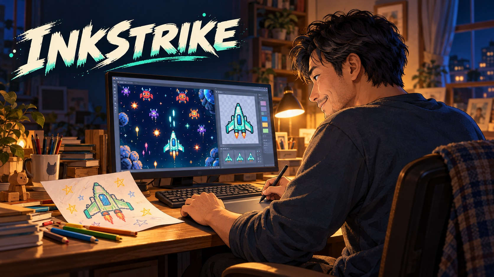

INKSTRIKE
v0.5.0

← ラボへ戻るある夜のこと
家族のPCに電源がついたままだ。
画面には、どうやら10歳になる息子が初めて作ったシューティングゲームの開発画面のようだ。
こっそり起動してみると、敵も弾も飛んでくる。
……でも、自分の機体はコアだけだ、
お父さんは、お絵描き画面を開いた。
せっかくだ。ちょっと格好いい機体にしてやろう。
動くか確かめるだけ。そう思っていたのに――。
あそびかた
機体を選んですぐ出撃。自分で描いたり、画像から作ることもできます。
インクを使うほど装甲が増える。
その分、火力・移動速度・弾速が下がります。
機体を選ぶ01
機体 1
機体を選んで編集・出撃。
飛行・サウンド設定
インク多め：装甲↑ ／ 火力・移動速度・弾速↓
線を少し描くと出撃できます。先端の黄色い点が砲口です。
描き方で、戦い方が変わる。
インクの総量は100。描くほど装甲が増える代わりに、移動と弾は遅くなり、残量から決まる攻撃力も下がります。インク80以上でも最低攻撃力20を確保します。インクは描かれたドットの面積で決まります。同じ場所の重ね塗りや色の変更では増えず、消しゴムで消すと戻ります。色による性能差はありません。装甲は見た目のドットの部分だけです。
横長は左右、縦長は前後に動きやすくなります。横スクロールでは、描いた機体が右向きに回転します。小さな機体は敵の出現が少し増えますが、序盤はどの機体でも少数です。
コアから黄色い砲口へ、エネルギーが直進します。線の中を通る間だけ速度が半分になり、先端に届くと自動発射。被弾で線が削れると砲口と発射間隔が変わります。移動・弾速・一発の攻撃力は出撃時のままです。武器アイテムで弾の数を増やせます。
敵や敵弾に触れた場所の装甲が削れ、コアに当たるとゲームオーバー。序盤は敵が少なく、時間と周回の進行に合わせて増えます。周回による出現ペースの増加には上限がありません。エンドレスで、コアが破壊されるまで続きます。最初は45秒でボスが出現し、倒すと装甲と武器を引き継いで次の周回へ進みます。次のボスは撃破から45秒後に出現します。ボスは攻撃後の「弱点開放」中だけダメージが通ります。2周目から時間差の二連射、3周目から横移動が高速化、4周目から上下方向の突撃が加わります。ボスの横位置は突撃中に変わりません。5周目以降はボス戦中にも雑魚が現れます。画面外の四角い操作エリアは、触れた位置が毎回の基準になります。指を動かした分だけ自機が移動し、指を止めると自機も止まります。指を置き直しても位置は飛びません。アイテムは開始20秒後から30秒ごとに出現し、合計6個で打ち止めです。Pで2連装、3方向へ強化。＋は描いた元の装甲を最大35%修復し、Bはコアへの被弾を1回防ぎます。
敵は形と弾の方向が異なります。甲虫型（ピンク）は進行方向へ直進弾、クモ型砲台（紫）は自機を狙います。2周目からカニ型（オレンジ）が上下左右へ、3周目から蛾型（青）が斜め4方向へ撃ちます。4方向型は連射間隔が長めです。
撃破点は「敵の基礎点 × 撃破時のアーマー残存率 × 撃破率 × インク倍率」（四捨五入）。基礎点は甲虫100・クモ型砲台150・カニ200・蛾250、エリートは各3倍、ボスは3500です。装甲残存率は出撃時の装甲に対する割合。撃破率はその敵を倒した直後の表示値で、出現済みの雑魚に対する撃破数です。画面内の敵・逃した敵も分母に含み、ボスは含みません。インク倍率は「1＋出撃時のインク使用率」で固定され、20％なら1.2倍、50％なら1.5倍、100％なら2倍です。装甲が削れてもインク倍率は変わりません。生存中のアーマー残存率は最低1％で、コアだけでも1％。コアが破壊されると0％です。撃破した位置に獲得点が短く表示されます。時間加点は1秒で1点。満タン時のアイテム取得ボーナスは従来どおりです。
ジャイロは出撃ボタンを押したときに許可を求めます。使えない場合はタッチパッドへ切り替えます。揺れすぎる場合は戦闘中の「基準合わせ」で持ち方を設定し直してください。
PAUSED
一息ついて、再出撃。
エンドレス：コアを守り、ボスを倒して次の周回へ。